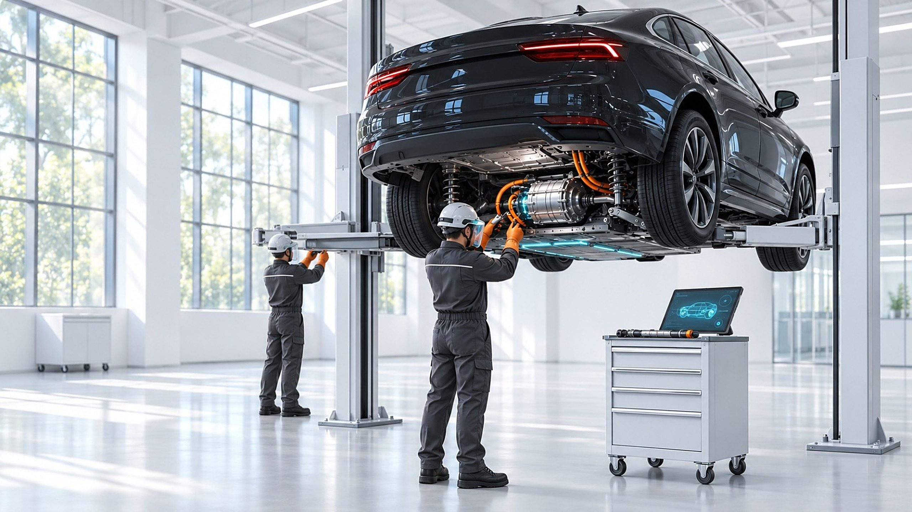

Imagen provisional
Tu mismo auto, ahora híbrido.
Un taller que hibridaría autos a combustión en uso para que gasten menos bencina sin cambiarlos.
Diego Alarcón · Benjamín Torres · Lukas VerdugoProfesor guía Roberto Brito · Taller Integrador II · UNAB · diciembre de 2026
Imagen ilustrativa
01 · El problema Contexto
La bencina subió $370 por litro en un solo día
Bencina 93 · 26 de marzo de 2026
+$370
por litro, de una sola vez: la mayor alza de combustibles desde que existen registros.
- $1.168,9 → $1.538,9
- por litro en la Región Metropolitana
- Más de 99%
- del transporte depende de derivados del petróleo
- 2035
- desde ese año solo se venderían livianos cero emisiones: la meta mira al auto nuevo
Fuente: Garretón, Emol (2026a; 2026b); Ministerio de Energía (2021), Estrategia Nacional de Electromovilidad.
01 · El problema A quién afecta
Quien trabaja con su auto paga cada alza sin alternativa
Vehículos de uso laboral · Región Metropolitana
162.780
taxis, colectivos y autos de aplicación.
- $7.400
- más por jornada con 200 km diarios supuesto
- $13.990.000
- el eléctrico más barato: unos 20 meses del ingreso mediano
Fuente: INE (2025), Parque de vehículos en circulación 2024; autos de aplicación: estimación del equipo; Autofact (2026); INE (2026), ingreso mediano de $680.000.
01 · El problema Cliente de referencia
Un colectivo de 213 km diarios gasta $851.587 al mes
por día
a la semana
rendimiento
por litro
Gasto en bencina al mes
$851.587
- Conduce
- Es dueño
- Decide
- Paga
- Prioridad: colectiveros y conductores de aplicación
Fuente: supuesto del equipo (213 km diarios, seis días a la semana, 10 km por litro); bencina 93 en la RM a $1.538,9 por litro (Garretón, Emol, 2026b).
01 · El problema Cómo se resuelve hoy
Las salidas actuales excluyen al auto con años o exigen cambiarlo
Eléctrico con subsidio
Exige cambiar de auto; cupos cerrados en la RM.
Conversión a gas
Gasco y Abastible: solo autos con hasta siete años.
Modificación informal
Sin certificación ante revisión técnica y seguro.
No hacer nada
Pagar cada alza.
Se transfieren 3,4 usados por cada auto nuevo, y el auto con años no tiene salida formal.
Fuente: Ministerio de Energía (2026b), Mi Taxi Eléctrico; Gasco (s.f.); Subsecretaría de Transportes (2026a); CAVEM (2026).
01 · La solución Propuesta de valor
Dos motores eléctricos atrás y el motor original, intacto
- 4.000 W o 6.000 W
- motores de Esencial y Plus; batería de litio-titanato, sin enchufe
- $153.286 al mes
- ahorro del colectivo con Plus (18,0%); Esencial: $123.480 (14,5%) simulación
Freno, ABS y control de estabilidad originales se conservan.
Fuente: informe final, propuesta de solución. Ahorro: simulación del equipo, una estimación de ingeniería sin medición en autos chilenos.
02 · El entorno PESTEL
Entorno favorable moderado: +1,85, con la norma pendiente
Balance ponderado
+1,85
Oportunidades
Tecnología madura · el conductor conserva su auto
Amenazas
Sin norma no se vende · dólar y litio al alza
Fuente: elaboración propia, análisis PESTEL ponderado (escala de −5 a +5) con las fuentes del capítulo de entorno del informe final.
02 · El entorno Cinco fuerzas de Porter
Industria de atractivo medio: los sustitutos son la fuerza principal
Intensidad ponderada
3,12
sobre 5. Industria: las alternativas para gastar menos combustible.
Los sustitutos aportan 1,10: el conductor tiene opciones sin riesgo regulatorio.
Fuente: elaboración propia con base en Porter (2008); factores calificados de 0 a 5 y ponderados según su peso en el negocio.
02 · El entorno Competidores y posicionamiento
Nadie más conserva el auto con más de siete años
| Atributo | Gasco y Abastible (gas) | MG 3 Hybrid (híbrido nuevo) | Changan Lumin 3P (eléctrico nuevo) | Lumine (hibridación) |
|---|---|---|---|---|
| Baja el gasto por kilómetro | ✓ | ✓ | ✓ | ✓ |
| Conserva el auto del cliente | ✓ | ✗ | ✗ | ✓ |
| Sirve al auto con más de siete años | ✗ | ✗ | ✗ | ✓ |
| Cuesta menos que un auto nuevo | ✓ | ✗ | ✗ | ✓ |
| Funciona sin red de carga | ✓ | ✓ | ✗ | ✓ |
| Certificación reconocida hoy | ✓ | ✓ | ✓ | Con la norma |
Competimos en conservar cualquier auto, no en precio: primero probar y certificar.
Fuente: elaboración propia con base en Gasco (s.f.), Subsecretaría de Transportes (2026a), Autocosmos (2026), Autofact (2026) y OLADE (2026).
02 · El entorno FODA
Las amenazas son la norma y el costo del kit
Fortalezas
Biblioteca de calibraciones propia · formación propia de técnicos
Debilidades
Ahorro que varía con el uso · precio alto para pagar al contado
Oportunidades
Segmento sin competidores directos · vía legal para probar en la calle
Amenazas
Sin norma no hay venta · kit importado, con dólar y litio al alza
Qué hacemos con esto
Probar antes de vender
Fijar el precio del kit
Formar técnicos propios
Fuente: elaboración propia con base en el análisis del entorno, las cinco fuerzas, el benchmarking y la cadena de valor; cruce de Weihrich (1982).
02 · El mercado TAM, SAM y SOM
Entrada: 73.908 autos laborales y meta de 2.850 en cinco años
Mercado total (TAM)
autos y taxis a combustión del país
Mercado disponible (SAM)
los mismos, en la Región Metropolitana
Segmento de entrada
taxis, colectivos y autos de aplicación de alto kilometraje
Techo de adopción
con la intención medida en la encuesta
Meta en cinco años (SOM)
instalaciones: 12,6% del techo
Fuente: INE (2025), Parque de vehículos 2024; encuesta del equipo (n = 196, 2026). Supuesto del equipo: 30% de los autos de aplicación son de alto kilometraje.
02 · El modelo Canvas
La biblioteca de calibraciones une los nueve bloques del modelo
Socios clave
Proveedores de componentes, 3CV, plantas de revisión técnica, aseguradoras y procesador de pagos
Actividades clave
Calibrar por modelo, instalar, gestión regulatoria y formar técnicos
Propuesta de valor
Tu mismo auto, ahora híbrido: menos bencina por kilómetro, con el ahorro estimado antes de pagar
Relación
Diagnóstico con datos, garantía e informe a tres meses
Segmentos
Uso laboral de alto kilometraje en la RM; desde el año 3, talleres de la red
Recurso clave
Biblioteca de calibraciones, dinamómetro y técnicos habilitados
Canales
Plataforma comercial y taller propio; luego la Red Lumine
Costos
Kit importado (variable); personas y taller (fijo)
Ingresos
Pago único por instalación, con cuotas a través de terceros; desde el año 3, licencias a la red
Fuente: elaboración propia con base en Osterwalder y Pigneur (2012).
03 · La evidencia Supuestos abiertos
Cinco preguntas abiertas antes de invertir
- 1¿Quién hibridaría primero?
- 2¿Qué pesa más: precio o confianza?
- 3¿Qué respaldos necesita para confiar?
- 4¿Cuánto pagaría?
- 5¿Cómo lo financiaría?
Ya respaldado
La necesidad y el entorno, con fuentes secundarias.
Todavía supuesto
Que el segmento pagaría, cuánto y cómo.
Fuente: elaboración propia; preguntas de la investigación de mercado del informe final.
03 · La evidencia Diseño de la investigación
Investigamos en cuatro etapas, de escuchar a medir
Objetivomedir la disposición a adoptar la hibridación y qué la explica.
1 · Exploratoria
4 entrevistasLenguaje y barreras del cliente
2 · Expertos
5 especialistasCondiciones técnicas y legales
3 · Encuesta
201 → 196 válidasIntención, precio y forma de pago
4 · En profundidad
4 entrevistasInterpretar los resultados
Fuente: investigación de mercado del equipo, 15 de octubre al 12 de noviembre de 2026; diseño mixto, exploratorio y descriptivo.
03 · La evidencia Expertos consultados
Cinco expertos, cinco miradas: Estado, academia, industria y técnica
Estado
Especialista en estado
La vía del proyecto experimental y la autorización por taller y modelo
Transporte
Especialista en transporte
El seguimiento del ahorro a tres meses
Industria
Especialista en industria
Probar entre 30.000 y 50.000 km antes de vender
Mecánica
Especialista en mecánica
La seguridad, el ABS y la garantía de la batería
Innovación
Especialista en innovación
Sin comprensión no hay adopción
Fuente: entrevistas a expertos, 28 de octubre al 9 de noviembre de 2026. Todos autorizaron su identificación con nombre y cargo.
03 · La evidencia Conclusiones comunes
Los cinco coincidieron: probar en autos reales antes de vender
5 de 5
especialidades: probar en autos reales, con la medición de un tercero.
- Autorización por taller y modelo
- Estado, mecánica y transporte
- La barrera: confianza en el ahorro
- industria, innovación, transporte y mecánica
- Garantía de la batería
- mecánica, transporte e industria
Nos cuestionaron: los motores en rueda suelen ser de baja potencia y quedan expuestos.
Fuente: entrevistas a expertos, 2026; matriz de análisis del equipo con diez conclusiones comunes.
03 · La evidencia Hipótesis
De lo que escuchamos salieron seis hipótesis medibles
| Hipótesis | Se mide con | |
|---|---|---|
| H1 | La intención es mayor en el uso laboral | intención por tipo de uso |
| H2 | La intención no varía con edad ni género | intención por edad y género |
| H3 | El ahorro predomina, junto a otro motivo | valoración de motivos |
| H4 | La barrera es la confianza, no el precio | primera duda |
| H5 | El respaldo externo da más confianza | valoración de respaldos |
| H6 | Prefieren hibridar a las alternativas | elección frente a auto nuevo |
Fuente: elaboración propia con la segmentación y la etapa exploratoria; formuladas antes de la encuesta.
03 · La evidencia Etapa cuantitativa
196 conductores encuestados, con cuotas por tipo de uso
respuestas y casos válidos
preguntas en línea
casos mínimos de uso laboral y particular
de 2026
No probabilística: una muestra aleatoria habría exigido 385 casos. Leemos resultados indicativos.
Fuente: encuesta del equipo, n = 196, 2026; muestreo no probabilístico por cuotas.
03 · La evidencia Medimos y encontramos
El uso laboral quiere más: 69,4% frente a 41,2%
Instalaría el kit
| Resultado | Dato | |
|---|---|---|
| H1 | Respaldada | 69,4% frente a 41,2% (p < 0,001) |
| H2 | Sin diferencia | edad y género no la explican |
| H3 | Respaldada | ahorro: 4,40 de 5 |
| H4 | No se cumplió | precio y daño empatan: 60 y 60 |
| H5 | No se cumplió | garantía escrita 4,13 frente a 3,96 |
| H6 | Respaldada | 89,3% de los interesados |
Fuente: encuesta del equipo, n = 196, corte del 12 de noviembre de 2026. Muestra no probabilística: resultados indicativos. Significancia de 5%.
03 · La evidencia Conclusión integrada
Pagarían si pueden financiarlo y si ven el ahorro medido
| Expertos | Encuesta | Conclusión |
|---|---|---|
| Probar antes de vender | Precio y daño empatan como primera duda | Vender con el ahorro medido |
| Garantía de la batería | Garantía escrita: 4,13 de 5 | Garantía al centro de la oferta |
| El cliente necesita financiamiento | Plus: aceptación entre 27% y 52% | Pago en cuotas con terceros |
Fuente: entrevistas a expertos y encuesta del equipo (n = 196; 194 respondieron la escalera de precios), 2026.
03 · La evidencia Qué cambió en el proyecto
La evidencia cambió cinco decisiones del plan
Se mantuvo
La prioridad del uso laboral
Se modificó
La venta parte después de medir · ahorro informado con un intervalo · foco en la intensidad de uso · garantía de batería al centro · mensaje según el perfil
Se descartó
Segmentar por edad o género · leer la preferencia como participación de mercado
Fuente: elaboración propia con la investigación de mercado, 2026.
04 · El plan Objetivos de marketing
Meta del primer año: 270 autos y la promesa cumplida en 80%
Segmentoel dueño de un auto de alto kilometraje urbano en la RM.
instalaciones; conversión de 15% a 30% al mes 12
de las ventas en Plus
de clientes con el ahorro mínimo informado, a tres meses
de notas 4 o 5 en confianza
Fuente: elaboración propia; objetivos de marketing y metas del Cuadro de Mando Integral del informe final.
04 · El plan Ansoff y posicionamiento
Entrada con producto nuevo, crecimiento por profundidad
Fuente: elaboración propia con base en Ansoff (1957), BioBioChile (2026), Gasco (s.f.), Autofact (2026) y Autocosmos (2026); precios con IVA.
04 · El plan Mix de marketing · 7P
Cada variable del mix responde a una duda que medimos
| Variable | Estrategia | Decisión |
|---|---|---|
| Producto | tres niveles | Esencial o Plus; garantía de 3 años la batería y 2 el resto |
| Precio | basado en el valor | $4.590.000 y $5.290.000 con IVA; Plus se recupera en 34,5 meses |
| Plaza | directa, luego red | Taller propio y plataforma comercial; Red Lumine desde el año 3 |
| Promoción | educativa | Casos con ahorro medido y demostraciones en dinamómetro |
| Personas | desarrollo propio | Dúos formados y validados con Lumine Habilita |
| Procesos | estandarización | Un procedimiento por modelo, con puntos de control |
| Evidencia física | medición | Estimador de ahorro e informe a tres meses |
Fuente: elaboración propia; precios con IVA; recuperación según la simulación del equipo para el colectivo de referencia.
04 · El plan Demanda y presupuesto
La captación limita las ventas, no el tamaño del mercado
Instalaciones por año
- $1.113,6 → $3.393,5 M
- ingresos del año 1 al año 5
- $10.000
- por cotización; conversión de 15% a 30%
- $273,1 M
- presupuesto de marketing en cinco años: 2,3% de los ingresos
Fuente: elaboración propia; pronóstico del escenario central, pesos de 2026 netos de IVA.
04 · El plan Operaciones
Un auto por jornada de dúo, con cuatro controles

Imagen provisional
1 · Cotización y asesoría
verificador y estimador de ahorro
2 · Instalación
4 controles: apto · masa y reparto · aislación · frenado
3 · Certificación y entrega
firma el Responsable Técnico
4 · Posventa
informe de ahorro a tres meses
- 8,4 h
- por auto: una jornada de dúo
- 15 autos
- al mes por dúo; uso de 70% a 73%
- Kits
- su llegada es el cuello de botella
Fuente: elaboración propia; tiempos estimados por el equipo. Imagen ilustrativa.
04 · El plan Recursos humanos · Lumine Habilita
Técnicos formados en casa: los que el mercado no entrega
24 de 39
competencias que ninguna formación en Chile entrega hoy estimación
Cuatro niveles
Aprendiz asistido
encargado de seguridad del dúo
Habilitado con supervisión
instala con un nivel 3 o 4 al lado
Autónomo
instala en dúo y firma su trabajo
Formador
enseña y valida a otros
Dotación
Gestión contratada en el mercado; técnicos formados en casa.
Fuente: elaboración propia; Observatorio Laboral Metropolitano et al. (2020); estimación del equipo sobre las 39 competencias del cargo.
04 · El plan Implementación · Carta Gantt
Primero probar, luego normar y recién después abrir
Fuente: elaboración propia con los plazos del D.S. N° 67 de 2020; fecha de la norma: supuesto del equipo. Primer año: personas $160,6 M y local $66,1 M.
05 · Los números Inversión inicial
Abrir el taller exige $402,1 millones en el año 0
$402,1 millones
Más garantía de arriendo ($3,6 M) y costo financiero del calendario ($2,7 M).
Fuente: elaboración propia con el libro de cálculo del Plan Financiero; activo fijo valorizado al precio publicado (millones de pesos de 2026, netos de IVA).
05 · Los números Capital de trabajo
La caja toca fondo en el décimo mes de operación
Caja acumulada del primer año, millones
- $180,8 M
- el mayor déficit de la caja operativa
- 2 meses
- viaja el kit: se paga al pedir y al embarcar; el cliente paga al instalar
Fuente: elaboración propia con el libro de cálculo, primer año mes a mes; método del déficit acumulado máximo (Sapag Chain et al., 2014).
05 · Los números Ingresos y costos
De cada $100 de ingreso, el kit se lleva $76,8
Por instalación, mezcla 40% Esencial y 60% Plus
Kit costeado pieza por pieza, al precio publicado más bajo y sin descuentos por volumen.
Margen de contribución desde el año 3, después de garantía, medios de pago y comisiones.
Fuente: elaboración propia; ingreso neto = (40% × $4.590.000 + 60% × $5.290.000) ÷ 1,19; dólar de $984,49 (SII, 12-11-2026).
05 · Los números Flujo de caja puro
Consume caja el primer año y la genera desde el segundo
- $228,5 M
- del año 5 son recuperaciones: capital de trabajo, valor de desecho y garantía
Fuente: elaboración propia con el libro de cálculo del Plan Financiero, escenario central (millones de pesos de 2026).
05 · Los números Tasa de descuento
Ku de 8,13%: dos industrias, según su peso
Autopartes
porque el kit es una autoparte
Servicio automotriz
porque lo instalamos y calibramos
CAPM
Ku = 2,63% + 1,03 × (4,23% + 1,10%)
Si vendemos una pieza y un servicio, nuestro riesgo es la mezcla de ambos.
Fuente: elaboración propia con base en Damodaran (2026a), betas por industria; Banco Central de Chile (2026), bonos en UF a 10 años; CAPM de Sharpe.
05 · Los números Cómo se financia
Como sus comparables: 70% socios y 30% crédito
Industrias comparablesdeuda equivalente a 42,37% del patrimonio.
Socios · 70,24%
Crédito · 29,76%
Crédito a cinco años: cinco cuotas de $30,6 M y un costo real de 7,86%. supuesto
Fuente: elaboración propia con base en Damodaran (2026a); plazo del crédito: supuesto del equipo, sin oferta bancaria; Kd = tasa comercial (Banco Central, 2026) + 3 puntos.
05 · Los números Flujo del inversionista
Con el crédito, el socio aporta menos y gana más
- 8,22%
- Ke: lo que exige el socio, con el riesgo del crédito
- 7,86%
- Kd: lo que cuesta la deuda, menos de lo que rinde el proyecto
Fuente: elaboración propia con el libro de cálculo del Plan Financiero, flujo del inversionista, escenario central (millones de pesos de 2026).
05 · Los números Indicadores
Crea valor: TIR de 16,13% contra un Ku de 8,13%
- $140,2 M
- VAN del proyecto puro
- 18,41%
- TIR de los socios; VAN de $144,6 M
- Año 2
- sobre el equilibrio: 505 frente a 435
Fuente: elaboración propia con el libro de cálculo del Plan Financiero, escenario central; Ku por CAPM con el beta ponderado de dos industrias (Damodaran, 2026a).
05 · Los números Escenarios
Según la demanda, el VAN va de −$522,7 a +$470,5 millones
Pesimista
−$522,7 MVAN del socio · TIR −19,84%
1.345 instalaciones · recupera: No recupera
Central
$144,6 MVAN del socio · TIR 18,41%
2.850 instalaciones · recupera: 4,45 años
Optimista
$470,5 MVAN del socio · TIR 32,70%
3.745 instalaciones · recupera: 3,55 años
Proyecto puro, central: recuperación descontada en 4,51 años.
Fuente: elaboración propia; escenarios del flujo del inversionista según el costo por cotización ($15.000, $10.000 y $7.500) y la conversión.
05 · Los números Sensibilidad de dos variables
El costo del kit pesa más que la conversión del primer año
| Kit ↓ · conversión → | 10% | 12,5% | 15% | 17,5% | 20% |
|---|---|---|---|---|---|
| −5,0% | 418,2 | 423,6 | 437,7 | 448,8 | 455,5 |
| −2,5% | 270,9 | 275,9 | 289,0 | 302,0 | 308,4 |
| Sin cambio | 123,1 | 128,1 | 140,2 | 151,8 | 160,7 |
| +2,5% | −26,2 | −20,9 | −9,9 | 0,6 | 9,1 |
| +5,0% | −182,1 | −175,7 | −165,1 | −154,1 | −147,2 |
VAN puro en millones de pesos, a Ku = 8,13%
- +2,3%
- en el kit, o −1,96% en el precio, deja el VAN puro en cero
- $25.229
- más por kit con cada $10 de alza del dólar
Fuente: elaboración propia con el libro de cálculo; conversión de régimen de 30% al mes 12; dólar observado de $984,49 (SII, 12-11-2026).
06 · La decisión Mitigación del riesgo del kit
Si el kit cotiza sobre $3,31 M, no se invierte
Contrato marco
Licitación entre proveedores y precio fijo por doce meses
Cobertura cambiaria
Forward de dólares por embarque, con respaldo de COBEX
Precio
Palanca adicional, dentro de la disposición a pagar medida
Y otro riesgo, a la vista: sin las recuperaciones del año 5, el VAN puro es −$14,4 millones.
Fuente: elaboración propia; $3,31 M = costo ponderado del kit que deja el VAN puro en cero; COBEX de Corfo.
06 · La decisión Conclusión integrada
Invertir por etapas: probar, normar y recién vender
Entorno · Lukas
Necesidad real y sin oferta que la cubra. Entorno favorable moderado, +1,85: el obstáculo es el plazo de la norma. Diferenciación enfocada.
Mercado y plan · Torres
El cliente existe: uso laboral, 69,4%. 2.850 instalaciones en un taller, con Lumine Habilita.
Números y riesgo · Diego
VAN $140,2 M con financiamiento mixto. El mayor riesgo es el kit: regla de $3,31 M, precio fijo y forward.
Etapas2027 proyecto experimental, 3 autos · enero 2028 norma (supuesto) · julio 2028 apertura
Fuente: informe final, conclusiones; cifras del escenario central.
Diego Alarcón · Benjamín Torres · Lukas Verdugo · Taller Integrador II · UNAB
Anexos Para las preguntas de la comisión
Anexos tecla P para buscar
Anexo A1 ¿Cuánto cuesta el kit y cómo se costeó?
Costo del kit pieza por pieza
| Pieza | Esencial | Plus |
|---|---|---|
| Dos motores en las ruedas traseras | $1.013.119 | $1.149.431 |
| Dos controladores Fardriver | $606.446 | $606.446 |
| 31 celdas de litio-titanato | $327.308 | $327.308 |
| Gestión de la batería, 200 A | $146.965 | $146.965 |
| Contactor principal | $138.496 | $138.496 |
| Pinzas y discos traseros | $134.269 | $134.269 |
| Fusible y portafusible | $128.337 | $128.337 |
| Unidad de control Macchina M2 | $103.312 | $103.312 |
| Pieza | Esencial | Plus |
|---|---|---|
| Flete, seguro y derechos | $100.455 | $100.755 |
| Dos bridas de aluminio est. | $83.898 | $83.898 |
| Barras y consumibles | $82.413 | $82.413 |
| Caja de la batería est. | $80.728 | $80.728 |
| Cortacorriente de emergencia | $69.270 | $69.270 |
| Sensor de presión de freno | $64.217 | $64.217 |
| Cable de potencia | $37.395 | $37.395 |
Fuente: informe final, Anexo 12 (pesos netos de IVA, dólar de $984,49). Total: Esencial $3,15 M, Plus $3,29 M, mezcla $3,23 M. «est.»: estimación de costo de fabricación.
← Esc vuelve a la lámina
Anexo A2 ¿Qué pasa si la norma no llega o el ahorro no se cumple?
Criterios del proyecto experimental
| Qué se mide | Avanzar | Ajustar | Detener o postergar |
|---|---|---|---|
| Ahorro urbano | Plus se recupera en 36 meses o menos (cerca de 17%) | Entre 12% y 17% | Bajo 12%: rediseñar |
| Frenado | Igual o mayor que el original | Fallas corregibles | Pérdida no corregible |
| Batería | Dentro de lo declarado | Degradación mayor | Riesgo térmico |
| Costo del kit | Cotización con margen | Margen estrecho | Sin margen: postergar |
Ruta: preparación (meses 1 a 3 de 2027) · resolución en 30 días hábiles · circulación con kit (meses 5 a 10) · memoria en 45 días hábiles · decisión en el mes 12.
Fuente: informe final, tablas de la ruta y de los criterios de decisión del proyecto experimental; D.S. N° 67 de 2020.
← Esc vuelve a la lámina
Anexo A3 ¿El ahorro está medido o es simulado?
Ahorro simulado y referencias
Simulación del equipo
Colectivo: 14,5% con Esencial y 18,0% con Plus. Aplicación: 12,2% y 14,9%. Estimación de ingeniería, sin medición en autos chilenos.
ICCT (2022)
Híbridos ligeros de 48 V: de cerca de 7% a casi 16% menos CO2, en homologación y con motores de 15 a 16 kW.
SEG Automotive
Declara hasta 25% para sus máquinas de 48 V en el eje trasero; cifra del fabricante, sin medición independiente.
Las tres cifras no se mezclan: el proyecto experimental mide el ahorro real.
Fuentes: Dornoff et al. (2022), ICCT. SEG Automotive (s.f.). Simulación del equipo (informe final, Anexo 7).
← Esc vuelve a la lámina
Anexo A4 ¿En cuánto tiempo se paga el kit?
Precio, cuota y recuperación
| Concepto | Esencial | Plus |
|---|---|---|
| Precio con IVA | $4.590.000 | $5.290.000 |
| Pie de 30% | $1.377.000 | $1.587.000 |
| Cuota a 48 meses | $101.600 | $117.100 |
| Ahorro del colectivo | $123.480 | $153.286 |
| Meses para recuperar | 37,2 | 34,5 |
- 3 años
- Plus se recupera en tres años desde unos 204 km diarios
- 4 años
- desde unos 153 km diarios
- Más de 5
- con 120 km diarios o menos
Fuente: elaboración propia; crédito de consumo a 24,6% anual (octubre de 2026); ahorro simulado; bencina a $1.538,9 y 10 km por litro (supuesto del equipo).
← Esc vuelve a la lámina
Anexo A5 ¿De dónde sale la conversión y cuánto cuesta captar?
Embudo y conversión
- $10.000
- por cotización: US$0,70 por clic ÷ 7,52% de conversión × $984,49 = $9.164, redondeado al alza
- 15% → 30%
- conversión de cotización a pedido, del primer mes al mes 12
- $700.000 → $1.500.000
- pauta mensual, desde el décimo mes
- 15 autos
- al mes por dúo; un dúo nuevo cuando los pedidos superan el 80% de la capacidad
Fuente: elaboración propia con base en el costo por clic publicado para Chile y el libro de cálculo del pronóstico.
← Esc vuelve a la lámina
Anexo A6 ¿Qué variable es la más sensible?
Escenarios completos
| Concepto | Pesimista | Central | Optimista |
|---|---|---|---|
| Costo por cotización | $15.000 | $10.000 | $7.500 |
| Conversión del primer mes / de régimen | 10% / 20% | 15% / 30% | 20% / 30% |
| Instalaciones en cinco años | 1.345 | 2.850 | 3.745 |
| VAN a Ke (millones) | −522,7 | 144,6 | 470,5 |
| TIR | −19,84% | 18,41% | 32,70% |
| Recuperación descontada | No recupera | 4,45 años | 3,55 años |
El crédito se mantiene en $122,6 M en los tres escenarios; la diferencia de caja la absorben los socios.
Fuente: elaboración propia con el libro de cálculo, hoja de escenarios.
← Esc vuelve a la lámina
Anexo A7 ¿Por qué ese beta y esa tasa?
Tasas de descuento
| Parámetro | Valor | Origen |
|---|---|---|
| Tasa libre de riesgo real | 2,63% | Bonos de la Tesorería en UF a 10 años, 28-10-2026 |
| Premio de mercado + riesgo país | 4,23% + 1,10% | Damodaran |
| Deuda / patrimonio | 42,37% | 76,8% × 41,46% + 23,2% × 45,36% |
| Beta apalancado | 1,05 | Con el beta de la deuda (0,98) |
| Ku · Ke · Kd | 8,13% · 8,22% · 7,86% | Kd: tasa comercial 8,1% + 3 puntos, real |
| WACC (referencia) | 7,58% | 70,24% × Ke + 29,76% × Kd × (1 − t) |
Fuente: elaboración propia con base en Damodaran (2026a) y Banco Central de Chile (2026); recargo de 3 puntos: supuesto del equipo.
← Esc vuelve a la lámina
Anexo A8 ¿Cuánto cuesta el crédito y qué aporta?
El crédito
- $122,6 M
- a cinco años, cuota francesa de $30,6 M, sin año de gracia
- $30,4 M
- de intereses en cinco años
- $5,2 M
- VAN de la deuda: el ahorro tributario llega tarde por las pérdidas de arrastre
- $145,4 M
- VAN ajustado (VAN puro + VAN de la deuda)
Fuente: elaboración propia con el libro de cálculo; plazo del crédito: supuesto del equipo; garantías estatales (Fogape) para empresas sin historia.
← Esc vuelve a la lámina
Anexo A9 ¿Cómo crece la capacidad?
La operación, años 1 a 5
| Año 1 | Año 2 | Año 3 | Año 4 | Año 5 | |
|---|---|---|---|---|---|
| Instalaciones | 270 | 505 | 640 | 650 | 785 |
| Capacidad de los dúos | 384 | 720 | 891 | 900 | 1.071 |
| Dúos al cierre | 4 | 4 | 5 | 5 | 6 |
| Personas al cierre | 13 | 15 | 19 | 24 | 25 |
Biblioteca: 11 modelos el primer año, 19 al cierre del segundo y 31 al quinto.
Fuente: elaboración propia con el libro de cálculo, escenario central.
← Esc vuelve a la lámina
Anexo A10 ¿Cómo gana dinero la red y cuándo parte?
La Red Lumine
- $6.000.000
- paquete de entrada por taller, con la formación de dos técnicos supuesto
- $250.000 + $45.000
- cuota mensual del taller y por cada técnico inscrito supuesto
- 3, 8 y 16
- talleres en los años 3, 4 y 5
- $24,1 → $97,0 M
- ingresos de la red del año 3 al año 5
Fuente: elaboración propia; precios: supuestos del equipo con referencia en redes de talleres de marca. Lumine no vende kits a la red.
← Esc vuelve a la lámina
Anexo A11 ¿Cómo se forma y valida un técnico?
Lumine Habilita: niveles
| Nivel | Qué habilita | Competencias | Horas | |
|---|---|---|---|---|
| 1 | Aprendiz asistido | Encargado de seguridad del dúo | 7 | 64 |
| 2 | Habilitado con supervisión | Instala con un nivel 3 o 4 al lado | 23 | 136 |
| 3 | Autónomo | Instala en dúo y firma su trabajo | 8 | 40 |
| 4 | Formador | Enseña y valida a otros | 1 | 24 |
39 competencias en 13 módulos. Seguridad con evaluador externo y 100% de aprobación; nivel 3 tras 90 días de trabajo observado.
Fuente: informe final, plan de recursos humanos.
← Esc vuelve a la lámina
Anexo A12 ¿Cuánto pagarían y cómo?
Encuesta: precio y forma de pago
- 53 de 194
- aceptaron $5.990.000
- 47 de 194
- aceptaron $4.990.000 tras rechazar el primero
- 94 de 194
- rechazaron ambos
- 50 · 39 · 22
- de 111 de uso laboral: crédito bancario, cuotas con tarjeta, contado
Fuente: encuesta del equipo, n = 196, corte del 12 de noviembre de 2026. Muestra no probabilística: resultados indicativos. Escalera de precios descendente, que puede anclar al alza.
← Esc vuelve a la lámina
Anexo A13 ¿Cómo se llama la estrategia de…?
Nombre de cada estrategia
| Decisión | Estrategia |
|---|---|
| Genérica | Diferenciación enfocada (Porter) |
| Segmentación | Concentrada (Lambin) |
| Posicionamiento | Por beneficio y ocasión de uso (Kotler y Armstrong) |
| Crecimiento | Desarrollo de producto → penetración → diversificación relacionada (Ansoff) |
| Precio | Basado en el valor para el cliente (Nagle y Müller) |
| Promoción | Atracción e impulso (Kotler y Keller) |
| Procesos | Estandarización (Shostack) |
| Personas | Formar técnicos dentro; contratar la gestión en el mercado |
Fuente: informe final, capítulos II y III.
← Esc vuelve a la lámina
Anexo A14 ¿Por qué no decir «ahora híbrido» a un colectivero?
Mensaje a taxis y colectivos
- 70 kW
- exige el D.S. N° 212 de 1992 para inscribir un taxi o colectivo como híbrido o eléctrico: el kit no lo alcanza
- Dos mensajes
- particulares: «Tu mismo auto, ahora híbrido»; uso laboral: primero «gasta menos bencina en ciudad» y el ahorro en pesos al mes
Fuente: informe final, investigación de mercado y estrategia de posicionamiento; D.S. N° 212 de 1992.
← Esc vuelve a la lámina
Anexo A15 ¿Qué pasa en los primeros meses?
El primer año, mes a mes
| Mes | Instalaciones | Dúos | Ingresos | EBITDA | Caja acumulada |
|---|---|---|---|---|---|
| 1 | 3 | 1 | 8,4 | −20,8 | −244,6 |
| 2 | 7 | 1 | 25,3 | −15,8 | −269,1 |
| 3 | 10 | 1 | 37,9 | −14,9 | −298,0 |
| 4 | 15 | 1 | 58,9 | −12,7 | −311,0 |
| 5 | 15 | 1 | 58,9 | −13,3 | −346,0 |
| 6 | 20 | 2 | 82,1 | −7,3 | −379,9 |
| 7 | 30 | 3 | 126,3 | 0,5 | −370,9 |
| 8 | 25 | 3 | 105,3 | −3,3 | −390,1 |
| 9 | 35 | 3 | 147,4 | 4,8 | −387,7 |
| 10 | 30 | 4 | 126,3 | −0,8 | −412,0 |
| 11 | 40 | 4 | 168,4 | 7,7 | −405,6 |
| 12 | 40 | 4 | 168,4 | 8,0 | −402,4 |
Fuente: elaboración propia con el libro de cálculo, primer año (julio de 2028 a junio de 2029), millones de pesos.
← Esc vuelve a la lámina